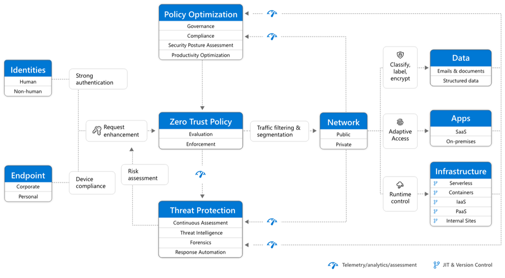

Что такое Zero Trust?
Zero Trust — это стратегический подход к кибербезопасности, при котором не доверяют ни одному пользователю или устройству по умолчанию. Модель построена на постоянной верификации, ограниченном доступе и мониторинге. Zero Trust применим в частных, корпоративных и государственных системах, обеспечивая адаптивную, устойчивую защиту от внутренних и внешних угроз.
Принципы модели Zero Trust
- Никакого доверия по умолчанию: все пользователи и устройства проверяются независимо от их положения в сети.
- Проверка на основе контекста: оценивается местоположение, поведение, статус устройства и другие параметры.
- Наименьшие привилегии: доступ только к тем ресурсам, которые необходимы для конкретной задачи.
- Непрерывный мониторинг и анализ: система отслеживает действия в реальном времени и выявляет аномалии.
Современные киберугрозы
Наиболее частые угрозы, с которыми сталкиваются организации:
- Фишинг и кража учётных данных.
- Вредоносное ПО: вирусы, шпионы, вымогатели.
- Атаки изнутри: недобросовестные сотрудники.
- Zero-day уязвимости.
- Компрометация поставщиков и подрядчиков.
Zero Trust не просто снижает последствия атак, а меняет сам подход к построению защищённых систем, исключая зависимость от периметра безопасности.
Методы защиты на основе Zero Trust
Принципы Zero Trust реализуются с помощью следующих решений:
- Многофакторная аутентификация (MFA): подтверждение входа с помощью дополнительных факторов (смс, приложение, биометрия).
- Контроль доступа на основе ролей и контекста: система проверяет, кто запрашивает доступ, откуда и к каким данным.
- Сегментация сети: деление сети на защищённые участки, чтобы ограничить распространение угроз.
- Мониторинг и аналитика поведения: сбор логов и обнаружение отклонений от нормальной активности.
- Шифрование данных: защита передаваемой и хранимой информации от перехвата.
Архитектура Zero Trust (Схема)
Ниже представлена типичная архитектура системы Zero Trust, включающая пользователей, устройства, контроллер доступа, политики и защищённые ресурсы:
Пояснение: каждая точка доступа — это отдельная зона контроля. Доступ происходит только при успешной проверке всех параметров: идентификация, состояние устройства, местоположение, политика доступа. Вся активность логируется и анализируется в реальном времени.
Обучение и цифровая гигиена
Важно не только внедрять технологии Zero Trust, но и обучать сотрудников:
- Не открывать подозрительные ссылки и вложения.
- Использовать сложные и уникальные пароли, менять их регулярно.
- Проходить курсы по информационной безопасности и обновлять знания.
- Устанавливать антивирус и обновления безопасности своевременно.
Контакты
Проект подготовлен в рамках дипломной работы на тему: "Защита данных на основе модели безопасности Zero Trust".
Автор: Ашелова Самира Аскаровна
Email: ashelova.samira2007@gmail.com
Колледж: КГКП «Семейский финансово-экономический колледж имени Рымбека Байсеитова»